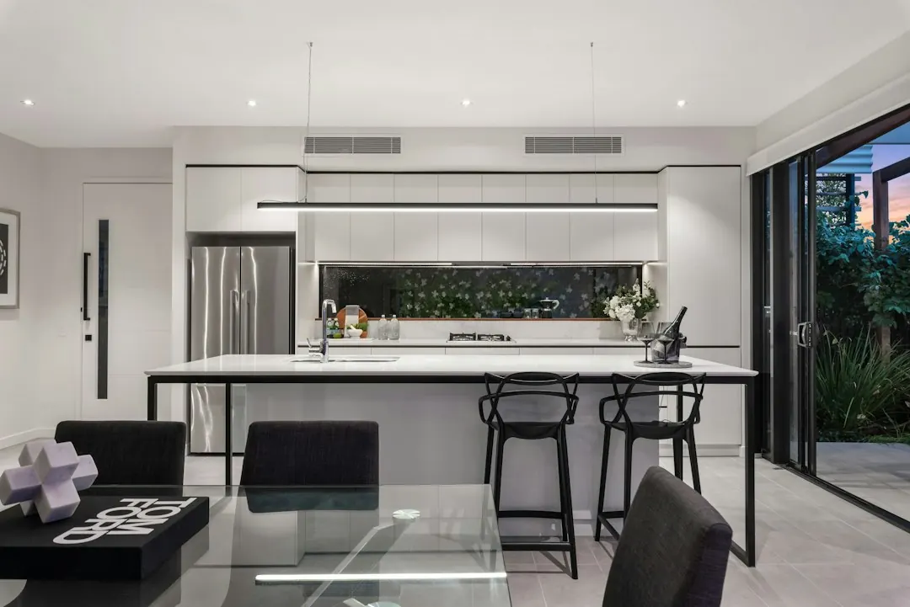

Roller door repair costs in Brisbane can be around $90 to $310 for minor repairs, depending on the fault and parts required. The useful first step is to describe whether the door is jammed, noisy, off its guides, affected by a spring or cable problem, or failing at the opener. Roller Doors Brisbane says its process begins with a fault check, followed by advice on repair, parts replacement or a new door where appropriate.
For homeowners comparing roller door repairs brisbane options, the practical decision is to identify the fault clearly, understand whether the problem is mechanical or electrical, and ask what repair path suits the door.
Roller Door Repairs Brisbane Explained
The first useful description is not simply that the garage door is broken. Note what happens when you try to use it. A door may be jammed, bent, noisy or sticking, while another may move mechanically but fail because of the opener, receiver, limit settings or safety beams. A remote or keypad problem points to access-device programming or receiver diagnosis rather than the curtain itself.
Roller Doors Brisbane asks people to share the suburb, door style and whether the issue involves the spring, opener, remote, track or urgent access. That information gives a specialist a clearer starting point. A Roller Doors Brisbane enquiry can then be considered against the door type and the fault pattern before the next step is confirmed.
- Describe unusual noise, sticking, impact damage or a door that has jumped its guides.
- Say whether the motor responds, whether the remote works and whether the door is left open or jammed shut.
- Identify visible hardware concerns, including worn rollers, frayed lifting cables, bent tracks or a broken spring.
Repair, parts replacement or replacement door
A sensible quote should separate the failed component from the wider condition of the door. A curtain, barrel, guides or general mechanical fault may call for roller door repair. Worn rollers, tired hardware or frayed cables may require parts replacement. A spring repair may also involve checking whether a heavy or uneven door needs rebalancing.
Opener work has a different decision path. The listed checks include the motor, receiver, limit settings and safety beams, with full opener replacement considered when needed. If the issue involves hardwired opener wiring or fixed electrical components, the published service description says a licensed Queensland electrician is used where required.
New installation is a separate option for roller, sectional and tilt doors, with opener choices and compliance notes where building-work thresholds apply. The repair-first approach described by the business means the door, motor and hardware are checked before replacement is suggested, giving the homeowner a clearer comparison between repairing the existing setup and installing a new one.
What changes across Brisbane homes
The same symptom can have a different practical context depending on the property. The published Brisbane coverage includes family homes, townhouse pockets, duplexes, apartment basements, Queenslanders, hillside lots, split-level homes and light-commercial sheds. Access, garage layout and door style therefore belong in the first enquiry, especially where a vehicle may need to remain outside or the door is part of a shared complex.
Northside homes around Chermside and Aspley are described alongside post-war streets, brick homes and townhouse pockets. The Gap and Indooroopilly references include leafy or steeper sites, split levels and apartment basements. Coorparoo, Camp Hill and Carindale include Queenslanders, renovated post-war houses, newer townhouse projects and double garages. These descriptions are useful prompts for explaining the installation setting, not a reason to assume that every suburb has the same repair issue.
For a second perspective on the same local service topic, read this independent Brisbane roller door repair guide and compare the questions it recommends asking before work is booked.
Quote questions that prevent confusion
The published cost guide places minor repairs around $90 to $310, depending on the fault and parts need. A useful quote conversation should make clear whether the amount relates to diagnosis, labour, parts, or a broader repair path. Ask what was found, which component is responsible, and whether the proposed work is intended to restore the current door or prepare it for replacement.
- What type of fault has been identified: mechanical, opener-related, access-device or electrical?
- Which parts may be needed, such as rollers, cables, springs, tracks, guides or an opener?
- Is the door suitable for repair, or is a new roller, sectional or tilt door being considered?
- Does the job require a licensed Queensland electrician because fixed electrical components are involved?
- What happens after the quote is accepted, and who confirms the next booking step?
These questions also help separate an urgent access problem from a planned maintenance visit. Emergency work is listed for doors stuck open, jammed shut or left unsafe after a spring, opener or impact failure.
Who this guide applies to
This guide is for Brisbane homeowners, landlords, tenants arranging access with the owner, and people responsible for townhouse, apartment or light-commercial garage areas. It is most relevant when a roller or garage door is noisy, sticking, off-track, damaged, difficult to secure, or not responding to its opener or remote.
It is also useful before requesting a new installation quote for a roller, sectional or tilt door. Have the door style, suburb, access conditions and visible fault ready. If the problem is urgent, explain whether the door is stuck open, jammed shut or affected by a spring, opener or impact failure so the service category can be considered accurately.
- Describe the symptom. Record whether the door is jammed, noisy, sticking, off-track, remote-controlled, opener-related or affected by a spring, cable or impact.
- Add the local context. Provide the Brisbane suburb, door style, access conditions and whether the property is a house, townhouse, apartment or shed.
- Request the fault check. Ask for the mechanical, opener-related or electrical issue to be identified before choosing repair, parts replacement or installation.
- Review the repair path. Check the proposed parts, electrical requirements, quoted work and whether the existing door remains suitable to repair.
| Situation | Likely focus | Useful information to provide |
|---|---|---|
| Door is bent, noisy, sticking or off-track | Mechanical inspection, track, guide, curtain or roller work | Door style, movement, impact history and visible alignment issue |
| Motor, remote or keypad is failing | Opener, receiver, limit setting, safety beam or access-device check | Whether the motor responds and which controls have stopped working |
| Spring, cable or hardware problem | Spring repair, cable replacement or worn-part assessment | Whether the door is uneven, heavy, frayed or left unable to operate |
| Existing door is ageing or badly affected | Repair comparison against a new roller, sectional or tilt door | Current door type, garage layout and preferred opener options |
Common questions
How much can a minor repair cost in Brisbane? The published guide puts minor roller door repairs around $90 to $310, depending on the fault and parts required. The final amount depends on what the fault check identifies.
What information should I include in an enquiry? Include the suburb, door style and what is happening, such as a spring, opener, remote, track or urgent access problem.
When might an electrician be involved? The service description says a licensed Queensland electrician is used where required for hardwired opener wiring or fixed electrical components.
Can an existing door be repaired instead of replaced? The published approach is repair-first. The door, motor and hardware are checked before repair, parts replacement or a full new door is recommended.
This guide covers fault identification, repair choices, quote questions and local property considerations for Brisbane garage and roller doors.